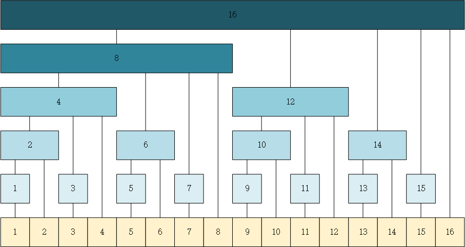

动态前缀和数组：树状数组
前缀和的不足
前缀和是一种常见的算法思想，能够实现在常数时间复杂度下得到某个子区间内所有元素和。以一维数组 nums 为例，定义前缀和数组 preSum，preSum[i] 表示 nums 前 i 个元素的和，利用动态规划的思想，易得 preSum[i] = preSum[i - 1] + nums[i] 的递推关系，因此构造一个前缀和数组的时间复杂度为 O(n)，而查询前 i 个元素的和只需查询 preSum[i] 的值，为常数时间。
前缀和方法在数组元素不发生改变的情况下十分高效，但如果数组元素可能会发生改变，与朴素求和做法（不使用前缀和数组，而是直接遍历区间元素累计求和）相比，前缀和数组需要 O(n) 的时间来进行更新。这两种做法要么查询是 O(1)、更新是 O(n)，要么查询是 O(n)、更新是 O(1)，那有没有一种折衷的方案，使得查询和更新效率都不至于太低呢？本文将介绍的树状数组就符合这样的条件。
树状数组
查询
由正整数的二进制表示可知，任何一个正整数都可以拆分为为若干个不重复的 2 的幂之和。那么对于一个下标从 1 开始且长度为 n 的数组，它的任意下标 i (1 <= i < n) 也可以依照此方案进行拆分，例如 7 = 4 + 2 + 1，那么对于一个区间 [1 ~ 7]，令被拆分得到的各整数为区间长度，按照从大到小的顺序，依次从左到右对区间进行分割，得到的各子区间为 [1 ~ 4]、[5 ~ 6] 和 [7 ~ 7]。这样分割具备一个非常好的性质：
对于分割后得到的任何子区间 [l, r]，r 必定唯一，且 r 的个数正好等于 n.
也就是说不存在两个子区间 [l1, r1]、[l2, r2] 满足：r1 = r2 且 l1 ≠ l2. 那么就可以以 r 为关键字（下标），构造一个数组 tree，tree[r] 表示区间 [l, r] （若 r 确定，则 l 也确定）的元素和。那么根据 7 = 4 + 2 + 1，有 preSum[7] = tree[4] + tree[6] + tree[7]。如下图所示，图中给出了对下标 1 ~ 16 进行拆分的结果。

由于任何一个正整数 i 拆分后的整数数为其二进制表示中 1 的个数，令该个数为 ns，对于区间 [1, i]，其拆分得到区间个数也为 ns，即 preSum[i] 最多由 ns 个 tree 数组元素累加得到，因此前缀和的查询效率为 O(logn).
更新
上图中的连接线代表了 nums 数组元素（黄色方格）和 tree 数组元素（蓝色方格）以及不同 tree 数组元素之间的相互依赖关系，若 nums 数组元素发生改变，便需要根据上述依赖关系自底向上对 tree 数组元素进行更新，以保证查询的正确性，问题就在于如何用规范的数学语言表示图中所示的依赖关系。
既然区间的分割主要基于二进制的位级表示，那么元素更新的依赖关系也不妨从二进制的角度出发。首先观察下标 9 的更新路径：9 -> 10 -> 12 -> 16，其二进制表示分别为：
1 | 9: 01001 |
似乎有 10 = 9 + 1，12 = 10 + 2，16 = 12 + 4 的关系存在。其中下标每次增加的值都为 2 的幂，且该 2 的幂即为当前下标 i 按上述规则拆分后得到的最小的数字。事实也的确如此（具备数学证明可以参考带你发明树状数组！附数学证明），这个最小数字通常称为一个数的 lowbit，即 lowbit[9] = 1、lowbit[10] = 2、lowbit[12] = 4。
得到这个规律后，更新操作便很容易了：若 nums[i] 改变，则首先更新 tree[i]，然后 i += lowbit(i)，继续更新 tree[i]，直到 i 超出了数组的范围，更新结束。注意到，lowbit[i] 在更新过程中是不断增大的，因此更新次数最多不超过 logn 次，即 tree 数组的更新效率为 O(logn).
构造
了解了如何根据 tree 数组计算前缀和以及如何更新 tree 数组后，接下来的问题就是如何初始化 tree 数组的值。一个简单的做法是先将 tree 数组各元素初始化为 0，再依次对每个 nums[i] 执行更新操作，这种方法的时间复杂度为 O(nlogn)。
注意 tree 数组的下标代表分割区间的右端点位置，如果当前更新到了下标 i 的位置，那么说明 tree[i] 的值已经初始化完毕（nums[j](j > i) 与 tree[i] 无关），因此可直接将该值加入 tree[i + lowbit(i)] 中。
代码实现
1 | class binaryIndexedTree { |
 微信
微信 支付宝
支付宝